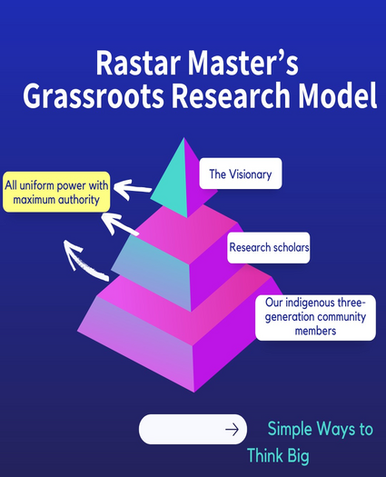

<!---------details banner section------->
<section class="details-section">

  <div class="container">
    <div class="details-title text-center wow fadeInUp" data-wow-duration="1s">
      <h2 class="text-center">From Theory to Reality</h2>
    </div>
    <div class="details-desc wow fadeInUp" data-wow-duration="1s">
      <p>How Rastar Master’s Democratic Research Model Validates Knowledge"?Is it the rigor of academic study, or could
        it be something deeper, perhaps even more connected to real life? In Rastar Master’s Democratic Research Model,
        truth isn’t just a theoretical construct—it’s a living, breathing reality forged from knowledge claims that
        withstand scrutiny, prove reliable, and resonate across the community. Truth here emerges when these claims are
        rigorously tested, validated through real-world application, and aligned with the collective understanding of
        those they serve. Unlike traditional top-down approaches, this model turns lived experiences, everyday
        observations, and the insights of diverse community members into a collaborative truth. It’s an approach that
        values empirical evidence from all voices—lead researchers, scholar teams, and community members
        alike—empowering people to shape solutions grounded in their reality. This grassroots model ensures that
        knowledge is more than academic; it becomes an active truth, validated by the very people who experience it
        firsthand.</p>
      <div class="details-image pt-3">
        
      </div>
      <p>Rastar Master’s research model is built on a democratic foundation, rejecting the traditional authoritative
        structure where a single lead researcher dictates the course of investigation. Instead, it operates as a
        collaborative ecosystem that unites three tiers of researchers—lead researchers, scholar teams, and indigenous
        community members—all actively participating in evidence collection and analysis. In this democratic model, the
        perspectives and insights of each contributor are valued equally, fostering a culture of shared ownership and
        open dialogue. How Democratic research shifts the authoritative paradigm, embracing a collaborative and
        inclusive approach that values diverse voices- It operates on the principle that research is most effective when
        it includes contributions from a wide array of participants, such as scholars, community members, and even
        children or elders with lived experience. This model sees participants as co-researchers, actively involved in
        all stages, from setting objectives to interpreting findings. In a democratic research model, insights from
        daily life, cultural practices, and experiential wisdom are viewed as valuable data, creating findings that are
        not only academically robust but also deeply relevant to the community. This contrast highlights the power of
        democratic research to produce results that are immediately actionable and grounded in real-life contexts,
        fostering a sense of shared ownership and ensuring that the knowledge produced is meaningful and applicable to
        those involved.</p>
    </div>
  </div>
</section>
